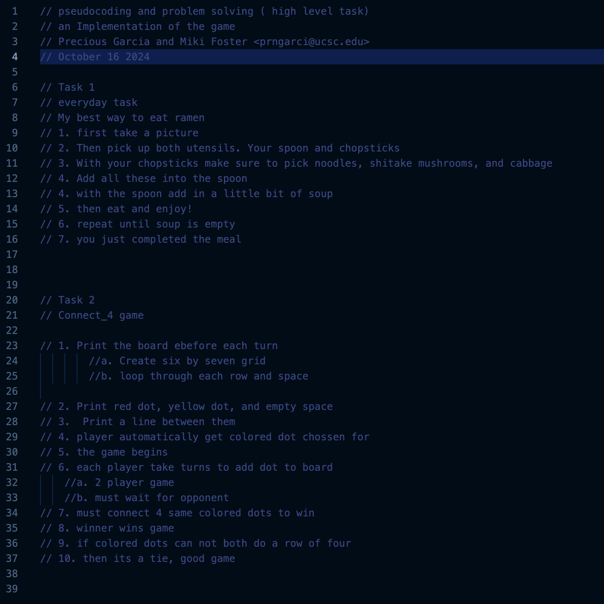

Lab 4 - Psuedocoding and Problem-solving
Challenge
Hi this is Precious and For this challenge I am partnering up with Miki Foster, The challenge is to add psuedocodes before you start to code. It is good practice to try this as it will create a list of anything. For example: every day tasks, or how to build a sandwich.
Problems
I think a problem I was trying to figure out, was to come up with an something to use for the everyday task for task 1. My partner and I thought that this assignment wouldn't go so hard on us since we are only writing up psuedocodes.
Reflection
We put alot of effort into this assignmnet. I added image and changed the color of my lab 4 to make it look presentable. And also did my psuedocodes for task 1 and 2. And followed the directions for 3 and 4.
Results

// // 1. Print the board ebefore each turn
//a. Create six by seven grid
//b. loop through each row and space
// 2. Print red dot, yellow dot, and empty space
// 3. Print a line between them
// 4. player automatically get colored dot chossen for
// 5. the game begins
// 6. each player take turns to add dot to board
//a. 2 player game
//b. must wait for opponent
// 7. must connect 4 same colored dots to win
// 8. winner wins game
// 9. if colored dots can not both do a row of four
// 10. then its a tie, good game